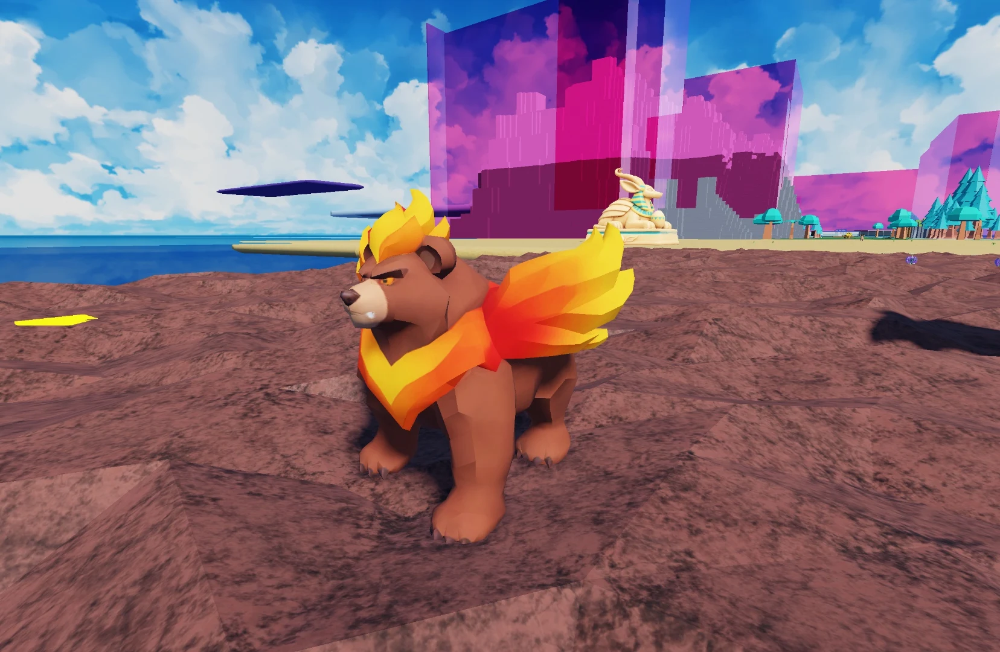
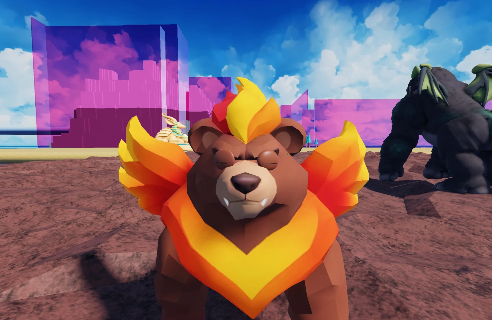

Idle
Earlier Codex review: 8.5/10
Quiet head and body movement while all four paws hold their positions.
Retained earlier assessment. The current source needs a new review; this number does not approve the changed version.
- Isolated source render.
Audio and animation previews, videos and model downloads are retained locally and are not hosted on this website. Text, assessments and still images remain available.

Perspective modelling reference · Open image for full size
A broad-backed creature with a mantle of glowing feathers and a warm fan tail. Bearbecue pads along the rocky slopes, then folds its paws and lifts into the mountain air.
Animal combination: Brown Bear + Phoenix
View parent heights, weights and calculation
🍽️ Omnivore 🐾 Ground Air
💪 Strength Boost: While this pet follows you, it boosts your Strength by 20% (up to level 100). Carry heavier eggs, jump higher and use less stamina for club swings.
One active creature total: following or mounted. Choosing another replaces the current creature.
First hatch: +7,500 Strength XP and $500,000 Cash. Later hatches: +750 Strength XP (10%), with no further discovery Cash.
One first-hatch award per player and species, shared across qualities and sizes. The certificate shows both credited amounts with the skill icon. Fixed amounts are independent of XP boosts. All hatch bonuses
Assigned game stats. The current creature model is installed alongside its existing egg and named wild spawning. Gameplay acceptance and developer review remain separate.

The egg and creature share one internal scale. Egg kg is the base creature kg times scale. All base egg dimensions multiply directly by scale, and quality chooses the scale band.
Retained Studio Edit image at the earlier display scale. Captured before the 8 November 2026 parent-size blend. Use the updated height, length and weight above; this image does not establish the revised scale or ground contact.


Motion previews and downloads are retained locally. Playback starts on request so the rest of the page stays still.
These are local model renders. They do not establish live gameplay acceptance.
Quiet head and body movement while all four paws hold their positions.
Retained earlier assessment. The current source needs a new review; this number does not approve the changed version.
Four distinct paw placements at 1.393 studs/s. The sampled planted feet remain stationary on a straight path.
Retained earlier assessment. The current source needs a new review; this number does not approve the changed version.
The paired fore and hind support beats and brief airborne interval separate this from Walk at 4.540 studs/s.
Retained earlier assessment. The current source needs a new review; this number does not approve the changed version.
The stronger wing stroke and visible four-paw tuck read clearly at 18 studs/s. The short broad wing roots still compress near the recovery.
Retained earlier assessment. The current source needs a new review; this number does not approve the changed version.
Both orange irises close and reopen. The warm brown lids follow the face, with their fine crease visible at close range.
Retained earlier assessment. The current source needs a new review; this number does not approve the changed version.
| Action | GIF | MP4 |
|---|---|---|
| Idle | ||
| Walk | ||
| Run | ||
| Fly | ||
| Blink |
These are the exact reference inputs used for this creature. Some are range midpoints or explicit estimates, rather than measured population averages. Height and body length are labelled separately.
Scroll the table sideways on a narrow screen.
| Recorded input | Brown Bear | Phoenix | Historical mean |
|---|---|---|---|
| Height or body length | 1.0668 m | 0.77 m | 0.9184 m |
| Measurement type | shoulder height | body length | Mean of the two recorded sizes |
| Weight | 154.5 kg | 4.5625 kg | 79.53125 kg |
| How the size was recorded | Approximate adult shoulder height cited by the National Park Service. | Midpoint of the Cornell Lab golden eagle length range. | (Parent 1 size + Parent 2 size) / 2 |
| How the weight was recorded | Equal average of the NPS adult male and adult female mean masses for Yellowstone grizzlies. | Midpoint of Cornell Lab of Ornithology mass range for golden eagles. | (Parent 1 kg + Parent 2 kg) / 2 |
Brown Bear is the heavier parent. Natural target length = 0.75 x 2.285 + 0.25 x 0.77 = 1.90625 m, or 6.808035714286 studs.
Models longer than they are tall match forward length; the others match height. All dimensions scale together, preserving proportions. The natural standard dominant dimension is compressed to the 3 to 14 stud baseline range before the saved quality roll is applied. Individual quality scales can exceed that baseline range. Long bodies can be less than 3 studs tall. The parent measurement types above remain explicitly labelled.
Matches the parent reference and catalogue weight.
Heavier parent kg times max(current creature height,length) in metres divided by max(recorded parent height,length). No squared mass or length correction.
The current 75/25 blend uses the larger recorded dimension of each parent independently. Compress the natural standard size first, then apply the saved quality roll directly to dimensions and mass, preserving body proportions. Weight uses the heavier parent and actual dominant dimension. Egg kg uses the median bird fraction. Historical means and earlier balance multipliers are retained for provenance and do not control current mass.
These ranges use the actual quality bands and shared creature scale. Most rolls are near the midpoint.
| Quality | Scale | Egg weight (kg) | Egg height (studs) | Carry speed | Pet height (studs) | Pet weight (kg) | Normal Cash / sec |
|---|---|---|---|---|---|---|---|
| Standard | 0.75 to 1.25 | 9.75 to 16.26 | 2.64 to 4.39 | 50.00 to 50.00 % | 3.60 to 5.99 | 96.67 to 161.11 | 119.25 to 198.75 |
| Fine | 1.00 to 1.50 | 13.00 to 19.51 | 3.52 to 5.27 | 50.00 to 50.00 % | 4.79 to 7.19 | 128.89 to 193.34 | 318.00 to 477.00 |
| Superior | 1.50 to 2.00 | 19.51 to 26.01 | 5.27 to 7.03 | 50.00 to 50.00 % | 7.19 to 9.59 | 193.34 to 257.78 | 954.00 to 1,272.00 |
| Epic | 2.00 to 2.50 | 26.01 to 32.51 | 7.03 to 8.79 | 50.00 to 50.00 % | 9.59 to 11.99 | 257.78 to 322.23 | 2,544.00 to 3,180.00 |
| Legendary | 2.50 to 3.00 | 32.51 to 39.01 | 8.79 to 10.55 | 50.00 to 50.00 % | 11.99 to 14.38 | 322.23 to 386.67 | 6,360.00 to 7,632.00 |
Ember Mountain: 25% per nest slot
Base rates are per second for a creature placed at Home. Eggs still incubating and creatures in inventory do not earn. Currency starts at $0. Hatched pets placed in your Home garden pay into your wallet every second while you are online. The currency is Cash. Normal income scales with saved size and quality: Standard 1x, Fine 2x, Superior 4x, Epic 8x and Legendary 16x. Followers do not earn garden income; active petting temporarily gives the petted creature 3x. See Game mechanicsXP and skill levels for the full rules. Grim Peeper pets earn $10 per second.
Reviewed means Daniel has reviewed the in-game model and animations and is happy with them.
Daniel tells Codex when he approves how a model looks and works. Codex records Daniel's approval and updates this shared site. Reviewed shows a tick when Daniel is happy with the in-game model and animations.
Daniel: ✗ Pending
Separate developer review is pending.
The face icon used in the game. Labraduck also represents the Pets menu.